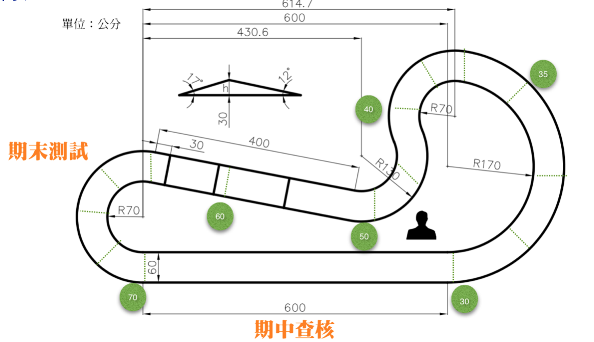

期末測試與報告
期末測試場地與規則
在指定的期末測試賽道上，通過所有指定的路徑查核點並累積積分，整車均需依序通過全部查核點，若錯過該查核點時，車輛需回上一查核點重新開始，比賽過程不停表，依完成總積分決定期末驗收成績，並依完成全部賽道所需時間排序給定成績，下圖中之數字為通過各查核點之得分。
期末驗收
口頭報告與海報製作：期末專題將以海報方式呈現，評審依各組之報告內容與海報呈現方式評定，各組需能有效率且精準的傳達設計理念及過程。
成果創意與製作品質：此項目鼓勵各組以不同的方式完成任務，同時評斷該創意的執行結果，同時評斷各組對其製程的熟悉程度，精確有效的利用各種工具為此項目的主要重點。
期末測試分數：依序完成計時賽道中之查核點，以最終之完成階段為測試分數。期末測試總成績為[賽道分數＋排名分數]，速度最快的前十組可獲得以下之排名分數
